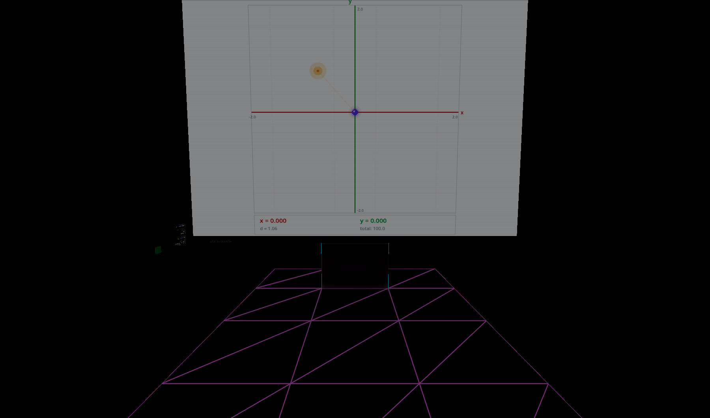
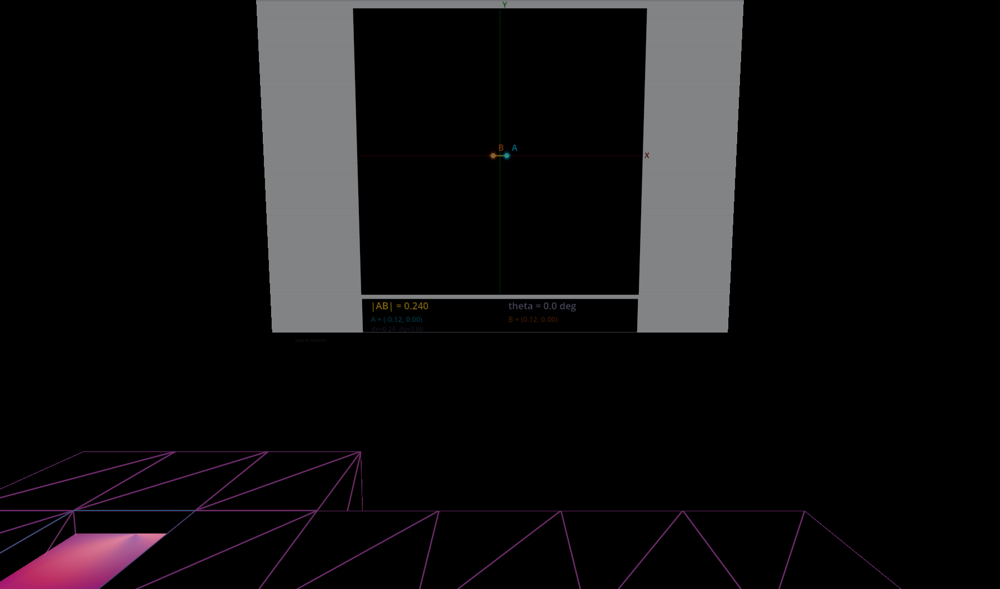
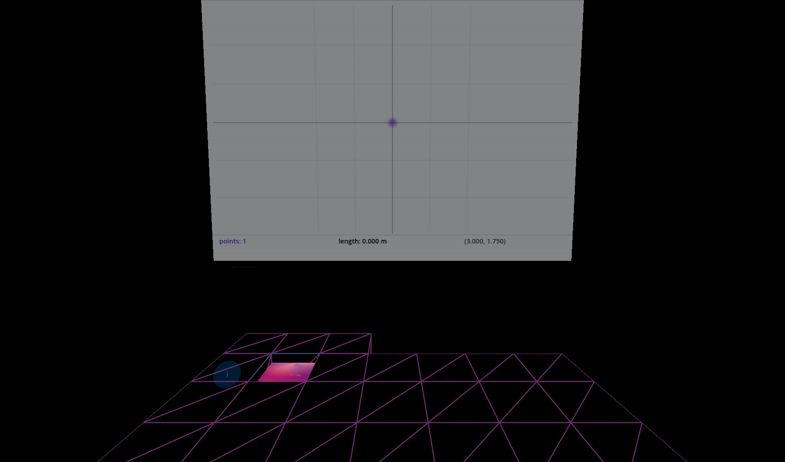

April 1, 2026
The Science Screen is a 2D monitor inside VR — a flat coordinate grid that mirrors what the player does with 3D artifacts. You grab a point in space, the screen shows its XY coordinates. You stretch a line between two endpoints, the screen shows distance, angle, midpoint. You draw a trace, the screen auto-zooms to fit your stroke.
Today we rebuilt the mode selection system from scratch. The old version guessed what to show by scanning nearby artifacts for name patterns. The new version is one word in the map JSON.
The original Science Screen scanned nearby artifacts and tried to guess the right visualization mode. It looked for "point" in node names, "line" in lookup strings, "draw_dot" in class names. This worked until it didn't:
GrabPoint was detected as a "point" artifact — wrong modelineContainer/GrabSphere — the shallow scan missed themMode is now declared in the map JSON, not discovered at runtime:
| Map | Interactable String | Mode |
|---|---|---|
| Point_One | science_screen:180:0.5#mode:point | Point tracker + target game |
| Point_Line | science_screen:180:1#mode:line | Line analyzer (|AB|, θ, midpoint) |
| Point_Trace | science_screen:180:2#mode:trace | Trace recorder with auto-zoom |
The #mode:xxx config flows through the standard apply_grid_config pipeline. The screen sets its mode immediately, locks it, then connects tracking nodes. No scanning, no guessing, no mode switches.
Legacy maps without #mode still get the old scan-based fallback — but the scan now stops at the first match and locks permanently.

Point: white coordinate grid, target game, score counter

Line: two endpoints A/B, distance |AB|, angle θ

Trace: auto-zoom drawing, point count, path length
Each mode renders its own full-screen visualization with a light scientific style (off-white background, subtle grid lines, colored data). The dark "mesh monitor" fallback is now dead code — it can never appear when an explicit mode is set.
Tracks a single grabbable point relative to its starting position. Red X-axis, green Y-axis, labeled tick marks. An orange target ring spawns at random positions — drag the point to it, score increments, particles explode. The coordinate readout updates at 60fps. Grid range: 2 meters (arm reach).
Finds two RigidBody3D nodes inside the line artifact's subtree (recursive search up to 4 levels deep — this solved the lineContainer/GrabSphere nesting). Renders point A (cyan) and B (orange) with a connecting line segment, projection lines to axes, and a readout: distance |AB|, angle θ, coordinates of both endpoints.
Reads _trail_points from the draw_dot artifact — an array of Vector3 positions sampled as the player moves the grab sphere. The visualization auto-zooms: minimum 30cm range for small strokes, expanding to fit larger drawings with 15% padding. Trail lines fade from thin/transparent (old) to thick/solid (new). Grid step adapts: 10cm when zoomed tight, 50cm when zoomed out.
Every Science Screen mode mirrors a web primitive game. The point tracker matches /primitives/point (drag dot to colored target). The line analyzer matches /primitives/line (drag A and B endpoints). The trace recorder matches /primitives/trace (draw shapes, measure coverage).
The web games run at localhost:3003/primitives/point. The VR screens run inside Godot. Same visual language: off-white background, red/green axes, colored data points, bottom readout panel. Different input: mouse drag vs. hand grab. Same math underneath.
The timeline test player now supports --duration=N for automated screenshots:
godot --path . --xr-mode off --script res://commons/testing/timeline_test_player.gd \
-- --map=Point_One --duration=10Loads the map, waits for artifacts and Science Screen to initialize, aims the camera at the screen, waits N seconds, captures a screenshot, and exits. All three screenshots in this post were generated this way — no headset needed to verify the visualization is correct.
| File | Change |
|---|---|
science_screen.gd | Added _set_explicit_mode(), _connect_tracking_for_mode(), _find_grabbable_points() (recursive). Removed all calls to _scan_for_artifacts(). Null-safe draw functions. |
Point_One/map_data.json | #mode:point |
Point_Line/map_data.json | #mode:line |
Point_Trace/map_data.json | #mode:trace |
timeline_test_player.gd | Added --duration=N with auto-screenshot |
Session: Science Screen explicit mode system — from heuristic scanning to declarative config.